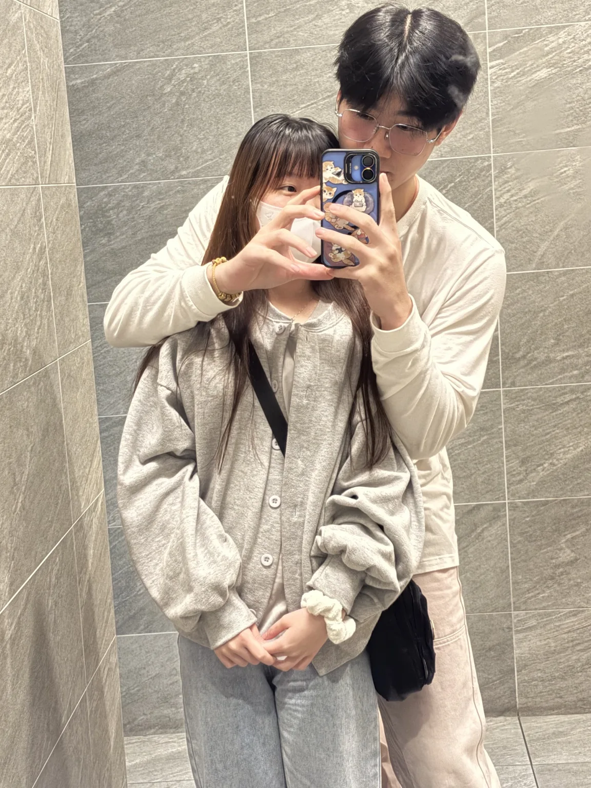

CHAPTER 01 ✿ YOU & ME
原來幸福，
是每個平凡的我們。
有妳在旁邊，連平常的日子都變得很值得紀念。
∞ ♡
SINCE 2025.10.31 · A YEAR WITH YOU
一起走過一整年
2025.10.31 是我們故事的開始。
我們在一起的日子一切從這天開始 ♡
陪妳過生日一起騎車去看風景 🎂
我們的一週年第一年，也是一輩子的序章

✳ 2025.10.31 — 2026.10.31 ✳
2025 年 10 月 31 日，我們在一起了。
這一年，我把所有珍貴的回憶偷偷收集起來，做成一份只送給妳的禮物。
請慢慢往下看，最後還有一封信 ♡
CHAPTER 01 ✿ YOU & ME
有妳在旁邊，連平常的日子都變得很值得紀念。
SINCE 2025.10.31 · A YEAR WITH YOU
一起走過一整年
2025.10.31 是我們故事的開始。
CHAPTER 02 · 2025.10.31 · WHEN IT ALL BEGAN
再回頭看這些照片，還是會忍不住笑。
原來從那時候開始，就有好多值得珍藏的回憶。
OUR FIRST LITTLE VIDEOS ♡
點一下播放，把最初的我們再看一遍。
剛在一起時，還有點害羞的我們。
喜歡和妳一起留下的每個畫面。
那些笑著鬧著的小片段。
當時的我們，真的好可愛。
原來幸福可以這麼簡單。
CHAPTER 03 · 2026.01.14 · YOUR BIRTHDAY RIDE
2026 年 1 月 14 日，陪妳過生日的那趟騎車旅行。
那天的沿途風景，我都想好好記住。
那一天，我陪妳過生日。
我們一起騎車、一起看風景。
對我來說，最幸福的不是去了哪裡，
而是身邊坐著的人是妳。
生日這一程，風景有妳就夠了。
CHAPTER 04 · THE LITTLE MOMENTS
從咖啡廳、海邊到生活裡的小日常，
有妳的畫面，都是喜歡的模樣。
CHAPTER 05 · REPLAY
再一起重播一次吧。
我們的故事，還會繼續拍下去。
以後也要繼續，拍下更多我們的故事。
CHAPTER 06 · JUST FOR YOU
可能有些話平常不好意思說，
所以這次，讓我寫下來。
TO BE CONTINUED...
希望明年、後年，還有很久很久以後，
身邊陪著彼此的人，依然是我們。